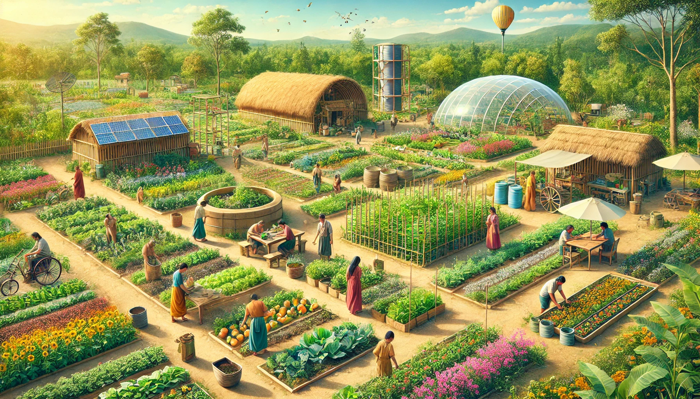

Organic Farming & Sustainable Agriculture
Objective: Promote self-sufficiency through sustainable farming practices, permaculture, and composting techniques.
Course Structure
- Introduction to Organic Farming & Permaculture
- Soil Health & Composting Techniques
- Aquaponics & Sustainable Water-Based Agriculture
- Community Organic Farming Practices
- Pollinator Conservation (Bee Keeping & Natural Habitat Creation)
- Harvesting & Post-Harvest Management
Practical Sessions
- Hands-on organic farming & composting
- Aquaponics & irrigation system setup
- Community farming events
